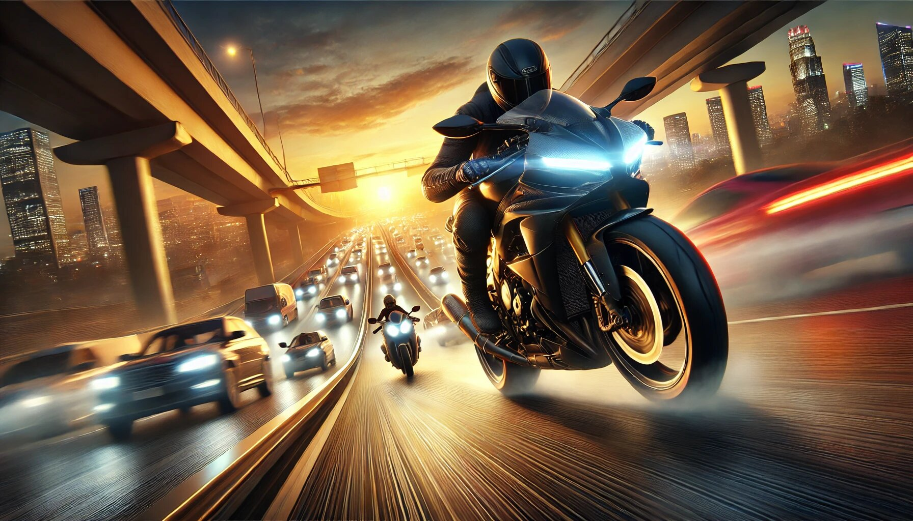

If you’re a fan of adrenaline-pumping bike racing games, then Traffic Rider is a title you absolutely cannot miss. This game has taken the mobile gaming world by storm, offering an unparalleled experience that combines immersive graphics, unlimited money, all bikes unlocked, and a full career mode. Whether you’re a casual gamer or a hardcore racing enthusiast, Traffic Rider has something for everyone. Let’s dive into the many reasons why this game is a must-play and why it’s worth every second of your time.
One of the first things you’ll notice about Traffic Rider is its stunning graphics. The developers have gone above and beyond to create a visually captivating experience. The bikes are meticulously designed, the roads are realistic, and the environments are so detailed that you’ll feel like you’re actually riding through traffic. Whether it’s the sun setting in the background or the headlights of oncoming cars at night, every detail adds to the immersion.
The game runs smoothly on most devices, ensuring that you get a seamless experience without any lag. The graphics are so good that you might find yourself stopping mid-race just to admire the scenery (but don’t forget to dodge those cars!).
Let’s face it—grinding for in-game currency can be a real buzzkill. But with Traffic Rider, that’s a thing of the past. The game offers unlimited money, which means you can buy the best bikes, upgrade them to their full potential, and unlock all the features without spending hours trying to earn cash. This feature is a game-changer, especially for players who want to focus on the fun parts of the game rather than worrying about finances.
With unlimited money, you can experiment with different bikes and upgrades, creating the ultimate racing machine that suits your style. It’s like having a cheat code that makes the game even more enjoyable!
What’s a racing game without an impressive collection of bikes? Traffic Rider delivers on this front by offering all bikes unlocked from the get-go. From sleek sports bikes to powerful cruisers, the game has a wide variety of options to choose from. Each bike has its own unique stats, handling, and design, allowing you to pick the one that matches your racing style.
Whether you’re a speed demon who loves to zoom past traffic or a careful rider who enjoys a smooth cruise, there’s a bike for you. And with all bikes unlocked, you don’t have to wait to ride your dream machine. It’s like walking into a bike showroom and being told, “Take your pick—it’s all yours!”
One of the standout features of Traffic Rider is its ability to keep the excitement alive. The game offers a variety of modes, including endless mode, time trial, and free ride, ensuring that there’s always something new to try. The traffic patterns change dynamically, so no two rides are ever the same. This keeps the gameplay fresh and engaging, even after hours of playing.
The thrill of weaving through traffic at high speeds, narrowly avoiding collisions, and overtaking other riders is unmatched. It’s the kind of excitement that keeps you coming back for more, whether you’re playing for five minutes or five hours.
For players who love a sense of progression, Traffic Rider offers a full career mode that takes you on an exciting journey. You start as a rookie rider and work your way up to becoming a racing legend. The career mode is packed with missions and challenges that test your skills and keep you motivated to improve.
Completing missions earns you rewards, which you can use to upgrade your bikes and unlock new ones. The sense of accomplishment you get from progressing through the career mode is incredibly satisfying. It’s like living out your dream of becoming a professional racer, minus the real-life risks!
A great racing game isn’t just about visuals—it’s also about sound. Traffic Rider nails this aspect with its realistic sound effects. The roar of the engines, the screech of tires, and the honking of cars all add to the immersive experience. The sound design is so good that you’ll feel like you’re actually on the road, surrounded by the chaos of traffic.
The game also features a dynamic soundtrack that changes based on your speed, adding to the excitement. Whether you’re cruising at a steady pace or speeding like a maniac, the music keeps you pumped up and ready for action.
Traffic Rider is designed to be accessible to players of all skill levels. The controls are simple and intuitive, making it easy for beginners to pick up and play. At the same time, the game offers enough depth to keep experienced players engaged. You can choose between tilt or touch controls, depending on your preference.
The responsive controls ensure that your bike handles exactly the way you want it to, whether you’re making sharp turns or dodging traffic. It’s the perfect balance of simplicity and precision, making the game enjoyable for everyone.
The developers of Traffic Rider are constantly working to improve the game and add new content. Regular updates bring new bikes, tracks, and features, ensuring that the game never gets stale. This commitment to keeping the game fresh and exciting is one of the reasons why it has such a loyal fanbase.
With each update, you can look forward to new challenges and experiences, making Traffic Rider a game that keeps on giving. It’s like getting a new game every few months, without having to spend a dime!
One of the biggest frustrations in mobile gaming is the pay-to-win model, where players who spend real money have an unfair advantage. Traffic Rider avoids this pitfall by offering unlimited money and all bikes unlocked, ensuring that everyone is on a level playing field. The focus is on skill and strategy, not on who can spend the most money.
This fair and balanced approach makes the game more enjoyable and rewarding. You can compete with other players or challenge yourself to beat your own records, knowing that your success is based on your abilities, not your wallet.
In a world full of mobile games, Traffic Rider manages to stand out as a true gem. With its immersive graphics, unlimited money, all bikes unlocked, and endless excitement, it offers an experience that’s hard to beat. The full career mode, realistic sound effects, and easy controls make it accessible to players of all skill levels, while the frequent updates and fair gameplay ensure that it stays fresh and fun.
Whether you’re looking for a quick adrenaline rush or a game to sink hours into, Traffic Rider has you covered. So, what are you waiting for? Download the game, hop on your bike, and get ready for the ride of your life. Just remember to keep your eyes on the road—those cars won’t dodge themselves!